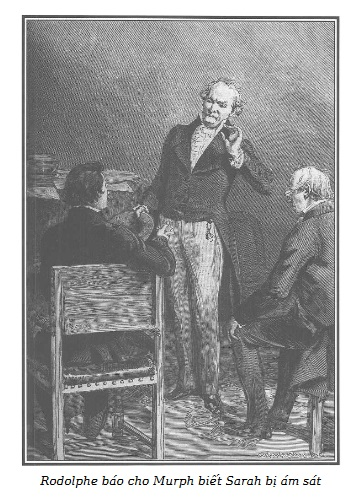

Rodolphe tiếp tục đọc thư bà d’Harville:
“… Sau một lúc trao đổi bằng tiếng Đức kéo dài vài phút giữa ngài Murph và lão Polidori, ngài Murph nói với hắn:
– Bây giờ hãy trả lời đi. Có phải khi bà vợ đầu của ngài Bá tước ốm, bà này đã mời ông đến nhà như một thầy thuốc?
– Đúng là bà ta. – Polidori trả lời.
– Để phục vụ cho những âm mưu ghê tởm của bà ta, ông đã có khá đủ hành động tội phạm bằng cách cho đơn thuốc độc mà làm chết bà d’Orbigny, mặc dù bệnh của bà ấy chưa có gì gọi là trầm trọng?
– Đúng. – Polidori trả lời.
Cha tôi rên lên một tiếng đau đớn, đưa hai tay lên trời và ủ rũ buông xuống.
– Dối trá và đê tiện. – Bà mẹ kế của tôi la lên. – Tất cả những chuyện đó đều dối trá. Họ thông đồng với nhau để làm hại tôi.
– Hãy im đi thưa bà. – Ngài Murph nói giọng nghiêm nghị. Ổng lại tiếp tục hỏi Polidori. – Có đúng cách đây ba ngày, bà này đã đến tìm ông ở phố Temple, số nhà 17, nơi mà ông ở giấu mình dưới cái tên Bradamanti không?
– Đúng thế!
– Có phải bà ấy đã yêu cầu ông đến đây để đầu độc ngài Bá tước d’Orbigny như trước đây ông đã đầu độc bà vợ ngài ấy không?
– Than ôi, tôi không thể nào chối cãi được. – Polidori nói.
Trước sự phát hiện kinh khủng đó, cha tôi đứng thẳng dậy với cử chỉ mạnh mẽ, ông chỉ cái cửa cho bà mẹ kế của tôi, và ông nắm tay tôi kêu lên những tiếng đứt đoạn:
– Nhân danh bà mẹ đáng thương của con, xin tha thứ, xin tha thứ. Cha đã làm bà ấy vô cùng đau khổ, nhưng cha xin thề với con là cha không biết gì về âm mưu tội ác đã làm cho bà ấy chết.
Tôi chưa kịp ngăn thì cha tôi đã ngã quỵ.
Khi tôi và ngài Murph đỡ ông dậy thì ông đã bất tỉnh. Tôi gọi những người giúp việc. Ngài Murph nắm tay Polidori vừa đi ra cửa vừa nói với bà mẹ kế:
– Hãy nghe tôi đây, thưa bà. Bà hãy đi khỏi nhà này trước một tiếng đồng hồ, bằng không tôi sẽ giao bà cho công lý.
Con mụ khốn nạn ấy đi ra cửa trong trạng thái khiếp sợ và điên dại mà ngài có thể dễ dàng hình dung được.
Khi cha tôi đã tỉnh, mọi chuyện vừa qua đối với ông như một cơn ác mộng. Tôi đành phải đau đớn kể lại cho ông sự nghi ngờ về cái chết bất ngờ của mẹ tôi, những điều ngờ vực ấy nhờ những tội ác đầu tiên của bác sĩ Polidori mà ngài biết được đã trở thành xác thực. Tôi nói với ông vì sao bà mẹ kế của tôi lại còn trút nỗi ghen ghét của bà vào đám cưới của tôi. Bà ta đã có mục đích rõ ràng khi làm cho tôi phải cưới d’Harville.
Trước đây càng tỏ ra yếu đuối, mù quáng trước bà vợ kế, thì nay ông càng tỏ ra không chút thương hại đối với bà ta. Ông muốn đưa bà ta ra trước công lý. Ông tự kết án một cách tuyệt vọng vì gần như đã tòng phạm với con quỷ cái đó. Ông đã cưới bà ta sau cái chết của mẹ tôi. Tôi trình bày với ông về hậu quả bêu riếu của một vụ án như thế mà tiếng vang sẽ bất lợi cho ông. Tôi yêu cầu ông đuổi bà ta ra khỏi nhà, chỉ bảo đảm cho bà ta đủ sống vì bà ta đã mang tên ông. Tôi khá vất vả mới làm cho cha tôi chấp thuận quyết định khoan hòa đó. Ông muốn tự tôi sẽ đuổi bà ta ra khỏi nhà. Việc ấy đối với tôi thật nặng nề! Tôi nghĩ là ngài Murph có thể sẽ muốn làm việc đó. Ngài Murph đã nhận lời.”
– Và tôi đã vui lòng nhận, thưa Điện hạ, vì không có gì làm tôi hài lòng hơn là ban lễ xức dầu thánh cho kẻ ác như thế.
– Thế bà ta nói gì?
– Bà d’Harville đã quá tốt khi xin ông bố trợ cấp một trăm louis cho con mụ khốn nạn ấy. Chuyện này theo tôi hình như không phải do lòng tốt mà là một sự yếu đuối. Tôi đến gặp ông Bá tước, ông đồng ý với nhận xét của tôi. Ông đồng ý cho chỉ một lần hai mươi lăm louis để bà ta chờ đợi một công việc làm. “Và công việc gì và chỗ làm nào có thể giao cho tôi, bà Bá tước d’Orbigny?” – Bà ta hỏi tôi một cách xấc xược. “Đó là chuyện của bà. Bà có thể làm một chân hộ lý hoặc quản gia gì đó. Nhưng hãy tin ở tôi. Hãy tìm một việc gì thật khiêm tốn, thật âm thầm, vì nếu bà có can đảm nói rõ tên bà, cái tên gắn liền với tội ác, người ta sẽ tò mò tìm hiểu, và bà có thể đoán được hậu quả sẽ như thế nào nếu bà lại rồ dại để làm lộ quá khứ. Bà hãy tự giấu mình cho kĩ, hãy cố làm cho người ta quên lãng bà, biến bà trở thành một bà Pierre, bà Jacques nào đó và hãy tự ăn năn hối hận, nếu bà có thể.” Bà ta nói với tôi: “Nếu ông đã đạo diễn tất cả chuyện đó, ông có dám tin là tôi không đòi hỏi những lợi thế của tôi bởi những bảo đảm của bản hôn thú không?” – “Sao kia, thưa bà, còn gì đúng hơn: Ông d’Orbigny sẽ không còn xứng đáng vì không thực hiện cam kết và tỏ ra không biết ơn bà về những gì bà đã làm và nhất là những gì mà bà đã muốn làm cho ông ấy. Bà hãy đi kiện, đi kiện đi, hãy đưa việc ấy ra trước công lý. Chắc chắn là công lý không đứng về phía bà.” Mười lăm phút sau bà ta đã lên đường sang một tỉnh khác.
– Ông đã có lý. Thật là khó chịu nếu không trừng phạt cái con mụ độc ác ấy. Nhưng một vụ kiện tai tiếng như thế trong hoàn cảnh ông Bá tước đang rất yếu là điều không nên nghĩ đến.
Rodolphe đọc tiếp:
“Tôi đã dễ dàng thuyết phục cha tôi rời khỏi Aubiers ngay ngày hôm nay. Ở đây ông sẽ bị ám ảnh vì nhiều kỷ niệm đau buồn. Mặc dù sức khỏe của ông rất kém nhưng chuyến đi vài ngày thay đổi không khí sẽ giúp ông khá hơn, như lời ông bác sĩ mới thay thế Polidori. Cha tôi muốn ông ta phân tích lọ thuốc. Sau hai giờ, ông bác sĩ cho biết loại thuốc này nếu cho bệnh nhân uống nhiều lần sẽ dẫn đến cái chết tất yếu mà không để lại dấu vết gì, như một cái chết bình thường.
Trong vài giờ, tôi cùng cha tôi, con gái tôi đến Fontainebleau. Chúng tôi sẽ ở đấy một thời gian rồi tùy theo ý của cha tôi, chúng tôi sẽ trở lại Paris, nhưng không ở nhà tôi. Tôi không thể ở lại nơi đã xảy ra những chuyện đáng buồn như thế!
Thưa Điện hạ, cũng như tôi đã nói lúc bắt đầu viết thư này, những việc qua đã chứng tỏ tất cả những gì tôi phải chịu ơn trước sự săn sóc của Điện hạ đối với tôi.
Được Điện hạ báo trước, được những lời khuyên của Điện hạ và được một chỗ dựa vững chắc là ngài Murph dũng cảm tuyệt vời, và tôi tin cha tôi sẽ yêu quý tôi như trước.
Xin tạm biệt Điện hạ! Tôi không thể nói gì hơn. Trái tim tôi xúc động quá chừng làm tôi không thể diễn tả tất cả những gì tôi muốn nói.
D’ORBIGNY D’HARVILLE
Tôi viết thư này, thưa Điện hạ, để bù lại một sai lầm mà tôi còn ngượng ngùng. Sau lời khuyên nhủ của Điện hạ, tôi đang tìm một vài việc thiện để làm. Tôi đã đến nhà giam Saint-Lazare thăm những nữ tù nhân nghèo. Tôi đã gặp ở đấy một cô bé đáng thương mà Điện hạ hằng quan tâm. Vẻ dịu dàng thiên thần, sự nhẫn nhục thành kính của cô gái ấy làm cho những bà coi tù phải khâm phục. Cho Điện hạ biết hiện giờ Sơn Ca đang ở đâu (tên cô ấy nếu tôi không nhầm) là để Điện hạ can thiệp xin cho cô bé được tự do ngay. Cô bé không may đó sẽ kể cho Điện hạ rõ những âm mưu đen tối khiến cô ấy đã bị bắt từ trang trại đưa vào cái nhà tù này, ở đó cô ấy đã làm cho mọi người phải công nhận tâm hồn trong trắng của mình.
Xin phép Điện hạ tôi được nhắc đến hai người mà tôi nhận bảo trợ tương lai cho họ là bà mẹ và cô con gái đáng thương đã bị tên chưởng khế Ferrand làm cho khánh kiệt. Họ hiện ở đâu? Điện hạ có tin tức gì về họ không? Mong Điện hạ cố gắng tìm ra dấu vết của họ để khi trở về Paris, tôi có thể trao cho họ món nợ mà tôi đã mắc với tất cả những con người nghèo khổ.”
– Sơn Ca đã đi khỏi trang trại Bouqueval, thưa Điện hạ. – Murph kêu lên không kém phần ngạc nhiên cũng như Rodolphe.
– Ban nãy người ta đã nói với tôi là cô bé đã ra khỏi nhà tù Saint-Lazare. – Rodolphe trả lời. – Chuyện đó làm tôi ngạc nhiên. Sự im lặng của bà Georges làm tôi áy náy và lo lắng*. Sơn Ca bé nhỏ đáng thương của tôi. Lại những đau khổ mới nào đến với nó. Ông hãy cử một người phi ngựa đến ngay Bouqueval tin cho bà Georges lập tức đến ngay Paris. Cũng nói ngay với ông Graün nhanh chóng lấy giấy phép vào nhà tù Saint-Lazare. Theo như bà d’Harville cho biết thì Marie đang ở đấy. Nhưng không, cô ấy không còn là tù nhân ở đấy vì Rigolette đã trông thấy cô ấy đi ra cửa với một bà đứng tuổi. Có phải bà Georges không? Nếu không thì là bà nào? Marie đi đâu?
Độc giả còn nhớ là do bị người của Sarah lừa là Marie đã đi khỏi Bouqueval theo lệnh của ông hoàng nên bà Georges không lo lắng về Marie mà hằng ngày bà chờ đợi.
– Hãy nhẫn nại, thưa Điện hạ. Trước chiều nay Điện hạ sẽ biết được những điều cần thiết. Sáng mai phải hỏi tên Polidori khốn nạn này. Hắn nói là hắn có nhiều phát hiện quan trọng nhưng chỉ nói riêng với Điện hạ.
– Cuộc gặp lại này đối với tôi quá ghê tởm. – Rodolphe buồn rầu nói. – Vì tôi chưa hề gặp lại con người này kể từ cái ngày bất hạnh, mà tôi… – Rodolphe không thể nói hết câu. Ông gục đầu vào lòng bàn tay.
– Thưa, Điện hạ sao lại phải đồng ý với đòi hỏi của Polidori? Hãy dọa đưa hắn ra trước công lý Pháp hoặc trục xuất hắn ngay tức khắc hoặc hắn phải nói với tôi tất cả những gì hắn định nói với Điện hạ.
– Ông bạn tốt của tôi ơi, ông nói rất phải. Sự có mặt của tên khốn nạn ấy làm dấy lên những kỷ niệm khủng khiếp, gắn với bao đau khổ không thể hàn gắn được kể từ khi thân phụ tôi băng hà rồi đến cái chết của cô con gái đáng thương của tôi. Càng lớn tuổi tôi càng cảm thấy thiếu đứa con gái ấy. Tôi đã yêu quý nó biết bao. Con bé đối với tôi thiết thân và quý giá biết chừng nào. Cái kết quả của mối tình đầu của tôi, nói khác hơn là những ảo ảnh thời trẻ của tôi. Tôi sẽ dành tất cả tình yêu thương của mình cho đứa con vô tội mà người mẹ tồi tệ ấy không còn xứng đáng, và rồi tôi mơ ước, đứa con đó, bởi vẻ đẹp tâm hồn, bởi vẻ kiều diễm của những nhân phẩm của nó sẽ làm dịu đi mọi nỗi đau buồn, mọi nỗi hối hận, than ôi, gắn với sự ra đời bi thảm của nó.
Sau vài phút im lặng, Rodolphe nói với Murph:
– Lúc này tôi có thể thú thật với ông bạn già của tôi, tôi yêu, vâng, tôi thầm yêu thắm thiết một người phụ nữ xứng đáng với tình yêu mến cao thượng nhất, chung thủy nhất, vì kể từ khi trái tim tôi lại mở ra đón lấy mọi êm dịu của tình yêu, từ khi tôi đã sẵn sàng mở lòng cho mọi xúc cảm êm dịu, tôi càng thấy sâu sắc sự mất mát đứa con gái đáng thương ấy. Có thể nói tôi lo sợ tình yêu mới này sẽ làm giảm đi vị cay đắng của những nỗi luyến tiếc. Nhưng không sao, tôi sẽ yêu tha thiết hơn, tôi cảm thấy mình tốt hơn, nhân đức hơn và càng thấm thía nỗi cay đắng vì cô con gái mà tôi yêu tha thiết đã không còn trên cõi đời này nữa.
– Không có gì đơn giản hơn, thưa Điện hạ, xin tha thứ cho sự so sánh của tôi, nhưng cũng như một số người có niềm say mê vui sướng và khoan dung, Điện hạ có một tình yêu tốt đẹp và cao thượng.
– Tuy nhiên lòng căm ghét những kẻ ác trong tôi càng mạnh mẽ hơn, sự oán giận của tôi đối với Sarah tăng lên do nỗi đau buồn về cái chết của đứa con gái tôi. Tôi hình dung là người mẹ xấu xa đó đã ruồng bỏ con mình khi những ý định ích kỷ của bà ta không thành, sau khi thành hôn với tôi. Do lòng ích kỷ tàn nhẫn, bà ta đã vứt bỏ con mình cho bọn vụ lợi. Con gái tôi có thể đã chết do thiếu sự chăm sóc. Đó cũng là lỗi tại tôi. Tôi đã chưa cảm nhận hết giới hạn của những bổn phận thiêng liêng mà tình cha con ấn định. Khi bản chất xấu xa của Sarah bị tôi phát hiện, lẽ ra tôi phải giành ngay con gái tôi ra khỏi bà ta, chăm nom nó với tình yêu thương ân cần, lẽ ra tôi phải biết trước bà ta bao giờ cũng chỉ là một bà mẹ tàn nhẫn. Chính là tại tôi, ông thấy không? Chính là tại tôi!
– Thưa Điện hạ, sự đau thương đã làm cho Điện hạ lầm lạc. Lẽ nào vì chuyện đó mà Điện hạ lại hoãn chuyến đi đã định như…
– Như một sự chuộc tội. Ông bạn nói có lý. – Rodolphe buồn rầu nói.
– Điện hạ không biết gì về bà Công tước Sarah kể từ khi tôi ra đi sao?
– Không, kể từ chuyện tố giác nhục nhã mà hai lần bà d’Harville suýt chút nữa thì bị hãm hại, tôi không có tin tức gì về bà ta. Sự có mặt của bà ta ở đây đè nặng và ám ảnh tôi. Tôi cảm thấy số phận không may luôn bên tôi, ám ảnh tôi, một tai họa mới nào đó đang đe dọa tôi.
– Hãy nhẫn nại, thưa Điện hạ, nhẫn nại. May thay nước Đức đã cấm cửa bà ta, và nước Đức chờ chúng ta.
– Vâng, chúng ta sẽ sớm đi khỏi nơi này. Ít nhất thì trong thời gian ngắn ngủi tôi ở Paris, tôi sẽ còn phải hoàn tất lời hứa thiêng liêng. Tôi sẽ tiến thêm vài bước trên con đường đúng đắn mà ý chí nghiêm túc và nhân từ đã chỉ cho tôi để chuộc lại tội lỗi của mình, cho đến lúc con trai của bà Georges được trở về với mẹ, vô tội và tự do, cho đến lúc lão chưởng khế sẽ phải thú nhận và bị trừng trị vì những tội ác của hắn, đến lúc mà tôi có thể bảo đảm tương lai cho tất cả những người thật thà, chăm chỉ mà sự nhẫn nhục, lòng can đảm và lòng chính trực của họ xứng đáng với sự quan tâm của tôi, lúc đó chúng ta sẽ trở về Đức. Chuyến đi của tôi sẽ không đến nỗi vô ích.
– Nhất là Điện hạ đạt được kế hoạch vạch mặt tên chưởng khế Ferrand quá tồi tệ vì hắn là nền tảng và là cái trục của mọi tội ác.
– Mặc dù “kết quả sẽ chứng minh cho các phương tiện” và rằng sự thận trọng cũng ít giá trị đối với tên nham hiểm đó, đôi lúc tôi cũng lấy làm tiếc vì đã đưa Cecily vào cuộc trả thù đúng đắn đó.
– Lúc này không sớm thì muộn, hẳn ả cũng phải đến đây.
– Ả đã đến rồi!
– Cecily à?
– Vâng. Tôi không muốn thấy mặt ả. De Graün đã chỉ thị khá tỉ mỉ, ả sẽ thực hiện chu đáo.
– Liệu ả có giữ được lời hứa không?
– Trước hết là mọi chuyện đã bó buộc ả, ả hy vọng một sự nương nhẹ cho số phận của ả, lo sợ bị tống giam ngay vào nhà tù ở Đức. De Graün sẽ theo dõi sát sao, chỉ cần một chuyện bậy bạ nhỏ là ông ta sẽ cho dẫn độ ả ngay.
– Đúng thế, ả đến đây như một kẻ đào thoát. Khi người ta biết vì tội ác nào mà ả đã bị kết án tù chung thân, người ta sẽ đồng ý cho dẫn độ ngay lập tức.
– Và, ngay như quyền lợi của ả không bắt buộc ả phải phục vụ chúng ta nhưng nhiệm vụ ấn định cho ả chỉ có thể thực hiện với nhiều mưu mẹo, nhiều mánh khóe nham hiểm, nhiều sự quyến rũ ma quái, Cecily hẳn rất thích, ả vốn thế mà (như ông Bá tước đã nói với tôi).
– Ả vẫn còn rất đẹp phải không, thưa Điện hạ?
– De Graün công nhận là ả hấp dẫn chưa từng thấy. Ông ta nói với tôi, sắc đẹp của ả làm người ta choáng mắt, nhất là bộ quần áo Alsace càng làm vẻ đẹp của ả thêm hấp dẫn. Cái nhìn của ả luôn luôn đầy ma lực.
– Thưa Điện hạ, tôi chưa bao giờ bị coi là mất trí, nhẫn tâm vô liêm sỉ, thế mà năm hai mươi tuổi, gặp Cecily, biết ả là cô gái khá nguy hiểm, khá đồi bại, tôi sẽ không giữ nổi lý trí được lâu dài trước cái nhìn bốc lửa của đôi mắt đen, nóng bỏng, lấp lánh trên khuôn mặt nhợt nhạt khát khao. Vâng, lạy trời tôi không dám nghĩ là nếu sa vào cái lưới tình tai hại với ả thì sẽ bị lôi cuốn sa ngã như thế nào!
– Điều đó không làm tôi ngạc nhiên, ông Murph đáng tin cậy của tôi, vì tôi biết người phụ nữ ấy. Ông Nam tước đã rất ngạc nhiên trước sự thông minh của Cecily khi ả tỏ ra quá hiểu và hình dung được vai kịch vừa khiêu khích, vừa thuần khiết mà ả phải đóng bên cạnh lão chưởng khế.
– Nhưng liệu có dễ dàng đưa được ả vào nhà lão chưởng khế nhờ sự môi giới của bà Pipelet không, thưa Điện hạ? Loại người như lão rất đa nghi đấy!
– Tôi tin cậy ở Cecily, ả có thể thắng được sự nghi ngờ của lão ta bằng một ánh nhìn.
– Lão ta đã thấy Cecily chưa?
– Hôm qua, theo bà Pipelet kể, tôi tin là lão ta đã bị mê hoặc bởi cô gái lai nên đã tức khắc nhận cô ta vào giúp việc.
– Tốt rồi, chúng ta đã thắng cuộc.
– Tôi mong là như thế. Tham lam, hung ác, đam mê nhục dục đã dẫn kẻ đã hãm hại Louise Morel đến những tội lỗi bỉ ổi nhất. Chính do lòng tham lam tàn bạo, tà dâm của lão sẽ bắt lão phải nhận những hình phạt khủng khiếp nhất cho những tội ác ấy, hình phạt xứng đáng để đền bù cho những nạn nhân của lão… vì ông hiểu do mục đích nào cô gái lai phải cố gắng hết sức mình.
– Cecily… Cecily… Chưa bao giờ có một sự tàn ác nào hơn, một tâm hồn đen tối hơn, một sự sa đọa nào hơn lại đã được huy động để thực hiện một kế hoạch đạo đức cao cả hơn, một mục đích công minh hơn như thế. Và còn David thì sao, thưa Điện hạ?
– Ông ấy chấp nhận tất cả. Sự khinh bỉ và ghê tởm mà ả gây ra đã khiến ông ấy chỉ còn thấy ở ả một công cụ cho một sự trả thù chính đáng. Ông ấy nói với tôi: “Nếu con người chết tiệt đó có thể chưa bao giờ xứng đáng với lòng thương hại sau mọi điều mà ả gây cho tôi, thì khi dấn mình vào để trừng phạt không thương tiếc tên gian ác ấy, ả phải là thần hủy diệt.”
Người gác cửa gõ nhẹ cửa phòng. Murph đi ra, khi quay vào ông mang theo hai bức thư, trong đó có một bức là cho Rodolphe.
– Thưa, thư của bà Georges. – Ông này kêu lên và đọc nhanh.
– Thưa Điện hạ, Marie…
– Không nghi ngờ gì. – Rodolphe nói, sau khi đọc xong thư. – Đây lại là một âm mưu đen tối nữa. Buổi chiều cái ngày mà Marie biến mất, vào lúc bà Georges báo tin này cho tôi, có một người không quen biết phi ngựa đến báo cho bà ấy là tôi đã biết sự việc đột nhiên mất tích, bà ấy không phải lo lắng gì. Chỉ trong vài ngày nữa cô bé sẽ về. Mặc dù vậy, bà Georges vẫn rất lo lắng, vì tôi không nhắc gì đến cô bé. Bà nóng lòng chờ tin tức về cô con gái yêu quý của bà như cách bà thường gọi cô bé đáng thương đó.
– Chuyện đó lạ thật!
– Bắt cóc Marie nhằm mục đích gì?
– Thưa Điện hạ, – Murph bỗng nói – bà Bá tước Sarah chắc không xa lạ gì với chuyện này.
– Sarah? Sao ông lại tin như thế?
– Hãy gắn chuyện này với sự tố giác của bà ta chống lại bà d’Harville.
– Ông nói có lý. – Rodolphe đột nhiên nghĩ ngay ra. – Rõ ràng rồi! Giờ thì tôi đã hiểu. Đúng! Lúc nào cũng chỉ là những toan tính cũ. Tưởng rằng phá phách ở tôi mọi tình cảm mà bà ta giả thiết là có thật, bà ta sẽ làm cho tôi cảm thấy cần phải gần cận với bà ta. Chuyện đó khả ố chừng nào thì cũng điên rồ chừng đó. Tuy nhiên hành động quấy phá ấy phải chấm dứt. Không phải chỉ riêng với tôi, bà ta còn tấn công vào tất cả những gì đáng trọng, đáng quan tâm và đáng thương hại nữa. Ông hãy cử ngay ông de Graün đến gặp bà Bá tước, nói cho bà ấy biết rằng tôi đã biết rõ việc bà ta dính dáng đến chuyện bắt cóc Marie, và nếu bà ta không cung cấp những thông tin cần thiết để tìm lại cô gái đáng thương ấy, tôi sẽ không tha thứ. Khi đó ông de Graün sẽ nói chuyện với bà ta bằng pháp luật.
– Theo thư của bà d’Harville thì Marie đang ở Saint-Lazare.
– Đúng, nhưng Rigolette khẳng định là đã thấy cô ấy ra khỏi nhà giam. Đó là một điều bí mật cần làm sáng tỏ.
– Tôi sẽ đi ngay, truyền lệnh của Điện hạ cho ông de Graün, thưa Điện hạ. Nhưng cho phép tôi mở nốt bức thư này, thư của một người ở Marseille, người mà tôi đã gửi gắm Chọc Tiết, người đó có nhiệm vụ giúp cho Chọc Tiết đi Algérie một cách thuận lợi.
– Này, thế anh ta đi rồi chứ?
– Thưa Điện hạ, đây mới là chuyện khác thường.
– Chuyện gì vậy?
– Trong thời gian khá lâu chờ ở Marseille chuyến tàu đi Algérie, Chọc Tiết cảm thấy buồn và lo lắng, đột ngột tuyên bố là anh ta thích quay trở về Paris, vào đúng cái ngày anh ta phải đi Algérie.
– Lại chuyện rắc rối gì thế?
– Mặc dù người của tôi đã đưa cho anh ta một số tiền lớn như đã quy ước, tùy anh ta sử dụng nhưng anh ta chỉ lấy rất ít đủ để quay về Paris ngay.
– Được, anh ta sẽ tự giải thích lý do thay đổi quyết định. Hãy cử ngay ông de Graün đến nhà bà Mac-Gregor, còn ông đi ngay Saint-Lazare tìm hiểu tin tức về Marie.
Sau khoảng một giờ đồng hồ, de Graün từ nhà bà Mac-Gregor trở về.
Mặc dù vốn là người bình tĩnh, cương nghị, nhà ngoại giao này có phần bối rối. Vừa vào nhà, Rodolphe đã nhận ra vẻ nhợt nhạt trên nét mặt de Graün.
– Này, de Graün, có chuyện gì vậy? Ông có gặp bà Bá tước không?
– Ái chà, thưa Điện hạ…
– Có chuyện gì vậy?
– Điện hạ chuẩn bị nghe một chuyện thật là nặng nề.
– Lại chuyện gì nữa?
– Bà Bá tước Mac-Gregor…
– Làm sao thế?
– Xin Điện hạ thứ cho tôi việc đột ngột loan báo tin để Người biết một biến cố vô cùng thảm hại và bất ngờ.
– Bà Bá tước đã qua đời sao?
– Không, thưa Điện hạ, khó mà qua khỏi được, bà ta bị đâm một nhát dao găm…
– Ôi, thật là khủng khiếp! – Rodolphe kêu lên vì cảm động và thương hại, mặc dù vẫn ghét cay ghét đắng Sarah. – Kẻ nào đã phạm tội ác đó?
– Người ta chưa biết, thưa Điện hạ. Vụ giết người này kèm theo việc trộm của cải. Kẻ giết người đã đột nhập phòng bà Bá tước và đã lấy đi rất nhiều châu ngọc.
– Hiện giờ, sức khỏe của bà ta ra sao?
– Tình trạng gần như tuyệt vọng. Bà ta vẫn bất tỉnh. Ông anh bà ta đang trong tình trạng rụng rời…
– Ông cần theo dõi tình trạng sức khỏe của bà Bá tước hằng ngày, ông de Graün thân mến.

.Vừa lúc đó ông Murph từ Saint-Lazare trở về.
– Có một tin buồn. Bà Bá tước Sarah vừa bị ám sát… Bà ta đang trong tình trạng nguy kịch.
– Dạ, thưa Điện hạ, bà ta dù có tội nhưng vẫn đáng thương hại.
– Một kết cục thật hãi hùng. Thế còn Marie?
– Đã được thả tự do từ hôm qua. Người ta ngờ rằng có thể do sự bảo trợ của bà d’Harville.
– Không thể như thế, trái lại bà d’Harville yêu cầu tôi có những chạy vạy cần thiết để cô bé ấy được tự do.
– Chắc chắn là, một bà có tuổi có bộ mặt đáng kính đã đến Saint-Lazare đem theo lệnh tha Marie. Cả hai đã rời khỏi trại giam.
– Đó là điều Rigolette đã nói với tôi.
– Nhưng cái bà đến đưa Marie đi là ai vậy? Cả hai người đi đâu? Điều bí ẩn mới đó là gì? Chỉ có bà Sarah biết được điều đó nhưng bà ta lại đang trong tình trạng hôn mê. Miễn là bà ta không đem những điều đó xuống mồ.
– Nhưng còn anh bà ta, ông Thomas Seyton, có thể cung cấp được vài tia sáng. Trong mọi lúc, ông ta là cố vấn cho cô em.
– Em ông ta đang hấp hối. Nếu đó là âm mưu mới, ông ta sẽ không tiết lộ. – Suy nghĩ một lát, Rodolphe nói tiếp. – Cần phải biết người đã đưa Marie ra khỏi nhà tù, như thế ta mới có thể biết thêm được một số điều.
– Hãy gắng tìm hiểu và gặp con người đó càng sớm càng tốt, ông de Graün thân mến ạ. Nếu không thực hiện được, hãy để ông Badinot vào cuộc. Bằng mọi giá phải tìm cho được dấu vết của cô gái đáng thương đó.
– Thưa Điện hạ, hãy tin ở tôi.
– Theo tôi, thưa Điện hạ, – Murph nói – Chọc Tiết quay lại với chúng ta có thể là điều tốt. Sự có mặt của anh ta có thể bổ ích cho chúng ta trong việc tìm kiếm đó.
– Ông nói có lý, lúc này tôi rất mong gặp người đã cứu sống mình vì tôi không bao giờ quên là tôi sống được là nhờ anh ta.